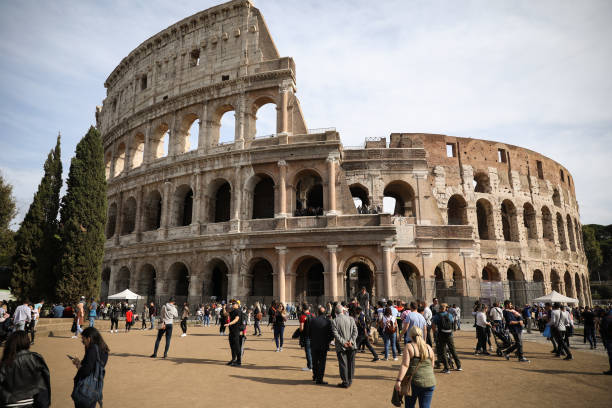
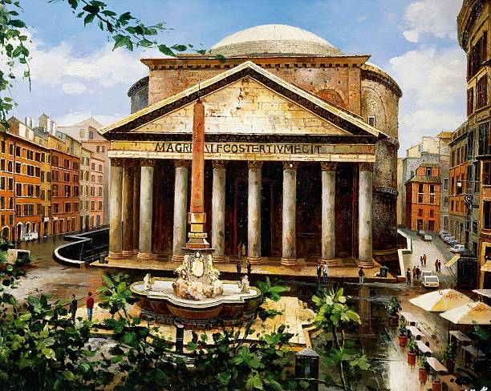
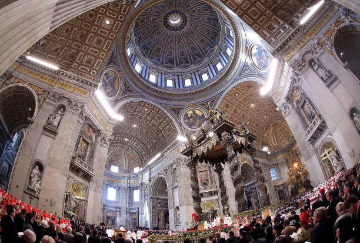
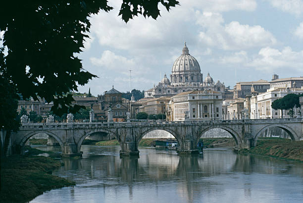
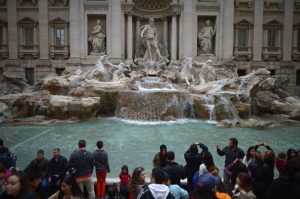

Capitale de l’Italie, Rome est l’une de ces villes remplies d’Histoire et d’aventures, qui pourrait facilement prendre toute une vie à visiter et explorer. Si vous n’avez pas tout ce temps devant vous et que vous prévoyez de visiter Rome sur deux, trois ou quatre jours seulement, vous allez avoir besoin de connaître les meilleures choses à faire à Rome. Parmi les milliers d’activités et visites à faire à Rome, on vous en présente notre top 17 des incontournables ! Ce top non exhaustif vous permet de savoir quoi faire à Rome si vous venez ici pour la première fois. Si vous avez déjà voyagé à Rome, vous pouvez lire notre article sur comment visiter Rome sans les touristes.
1. Le Colisée (Colosseo)
Colisée, Rome
Monument extraordinaire qui accueillait les combats de gladiateurs autrefois, le Colisée remonte à l’an 72. L’amphithéâtre Flavien (c’est aussi comme ça qu’on l’appelle) a été construit pour accueillir un public pouvant aller jusqu’à 50.000 personnes. Le site, qui fut le théâtre de nombreuses morts horribles, est un lieu historique et une étape incontournable pour tout amateur d’Histoire et d’architecture. Très prisé par les touristes, le Colisée défit le temps et a notamment inspiré le film Gladiator. Il est aussi considéré comme le plus grand amphithéâtre de l’Empire romain au monde : sans nul doute donc, il est une référence pour visiter Rome.

2. Le Panthéon de Rome (piazza della Rotonda)
Panthéon, Rome
Construit par l’empereur Hadrien entre 119 et 128 après J-C, le Panthéon de Rome est une merveille architecturale ! Le temple a été initialement construit en tant que monument pour les divinités antiques et sert aujourd’hui de lieu de repos pour l’artiste Raphaël et le premier président de l’Italie entre autres.
À l’intérieur, vous serez impressionnés par sa coupole et le sol pavé de marbre coloré. Le bâtiment a conservé ses portes originales en bronze. Bien que l’entrée soit gratuite, vous pouvez opter pour une visite guidée du Panthéon pour connaître tous les secrets du lieu !
A lire aussi : Visiter la villa d’Hadrien à Tivoli

3. Le Vatican
Vatican, Rome
Comment envisager de visiter Rome sans découvrir le Vatican ? Même si vous n’êtes pas croyants, allez jeter un œil sur la Place Saint-Pierre pour admirer les colonnes et la Basilica San Pietro (Basilique Saint-Pierre). À l’intérieur, vous pourrez admirer la Chapelle Sixtine et surtout la fresque du plafond de la chapelle, peinte par Michel-Ange entre 1508 et 1512. Vous remarquerez la scène de La Création d’Adam a acquis une portée universelle. Les musées du Vatican sont également à visiter.
Attention, pour cette visite il est conseillé de réserver son billet à l’avance pour ne pas être pris dans de longues files, notamment en période de vacances scolaires !

4. Les Jardins de la Villa Borghèse
Les Jardins de Villa Borghèse
Pour visiter Rome en bonne et due forme, il est appréciable de prendre une pause de temps en temps, tant pour s’éloigner de l’excitation de la ville que pour profiter d’une promenade relaxante. Dans les jardins de la Villa Borghese, qui est le plus grand parc de Rome, enfants et adultes peuvent marcher, faire du poney, et nourrir les nombreuses tortues qui se trouvent dans l’étang.
On peut également y admirer des monuments comme le temple d’Esculape. La Galerie Borghese, avec ses 20 salles d’exposition, est également très réputée, et plaira à ceux et celles fascinés par l’art et l’histoire.

5. La Fontaine de Trevi
La Fontaine de Trevi
Que ce soit en admirant la beauté de la fontaine ou en jetant une pièce de monnaie tout en faisant un vœu, tout le monde trouvera quelque chose à apprécier à la Fontaine de Trevi. Réalisée entre 1732 et 1762, c’est la plus grande fontaine de Rome ! Nichée sur une petite place modeste, la belle fontaine et l’architecture magnifique vous raviront à coup sûr.
Si vous allez y jeter une pièce, vous vous demanderez sûrement ce que deviennent les pièces de la fontaine.
